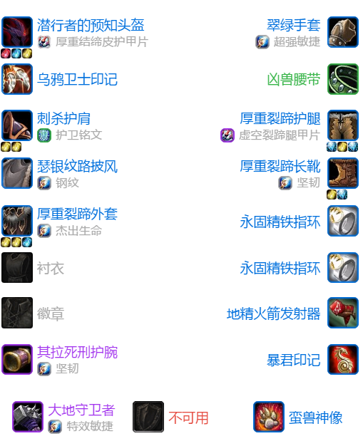
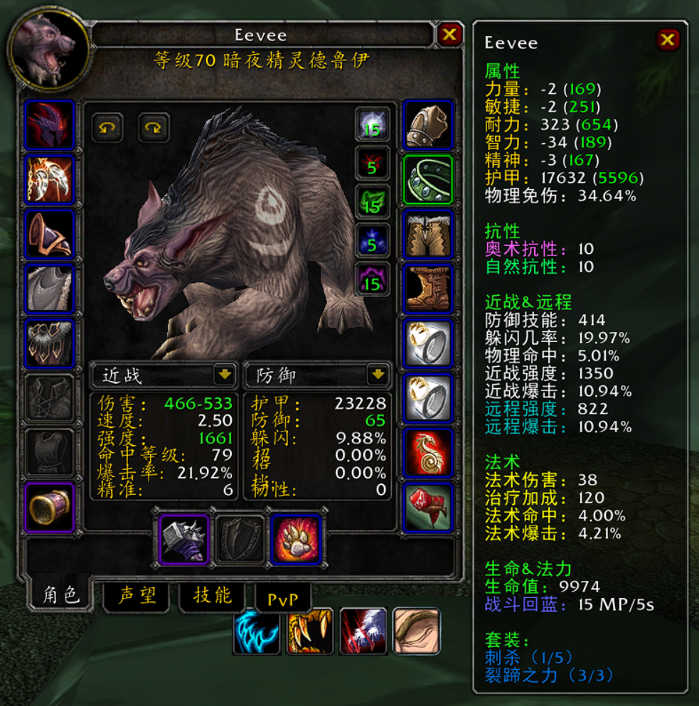
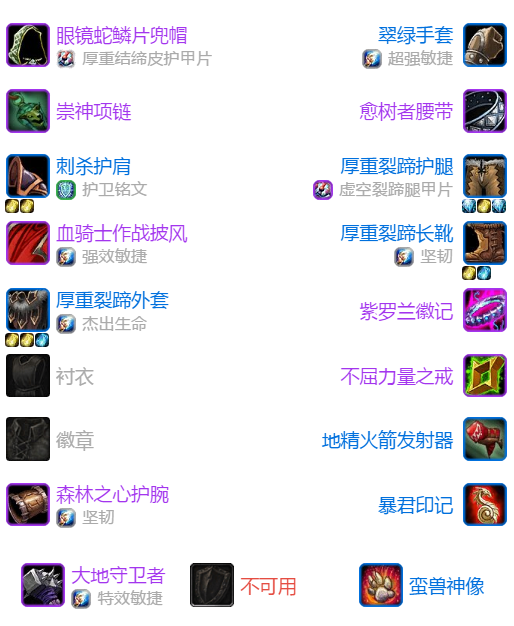
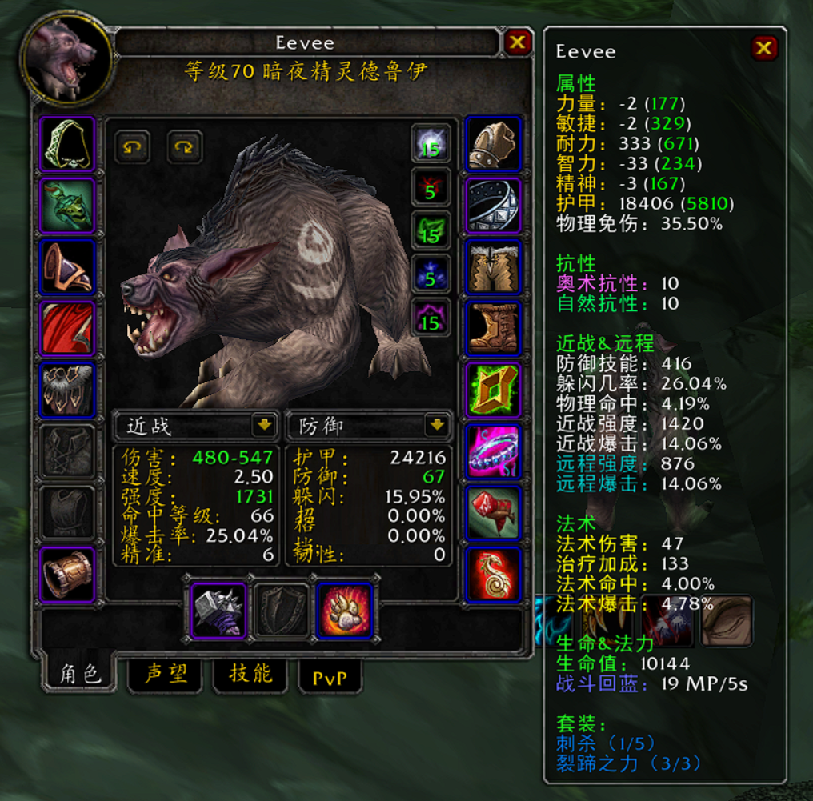
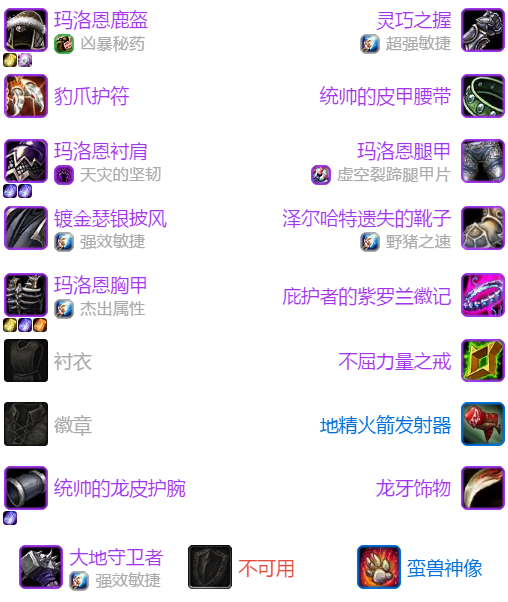
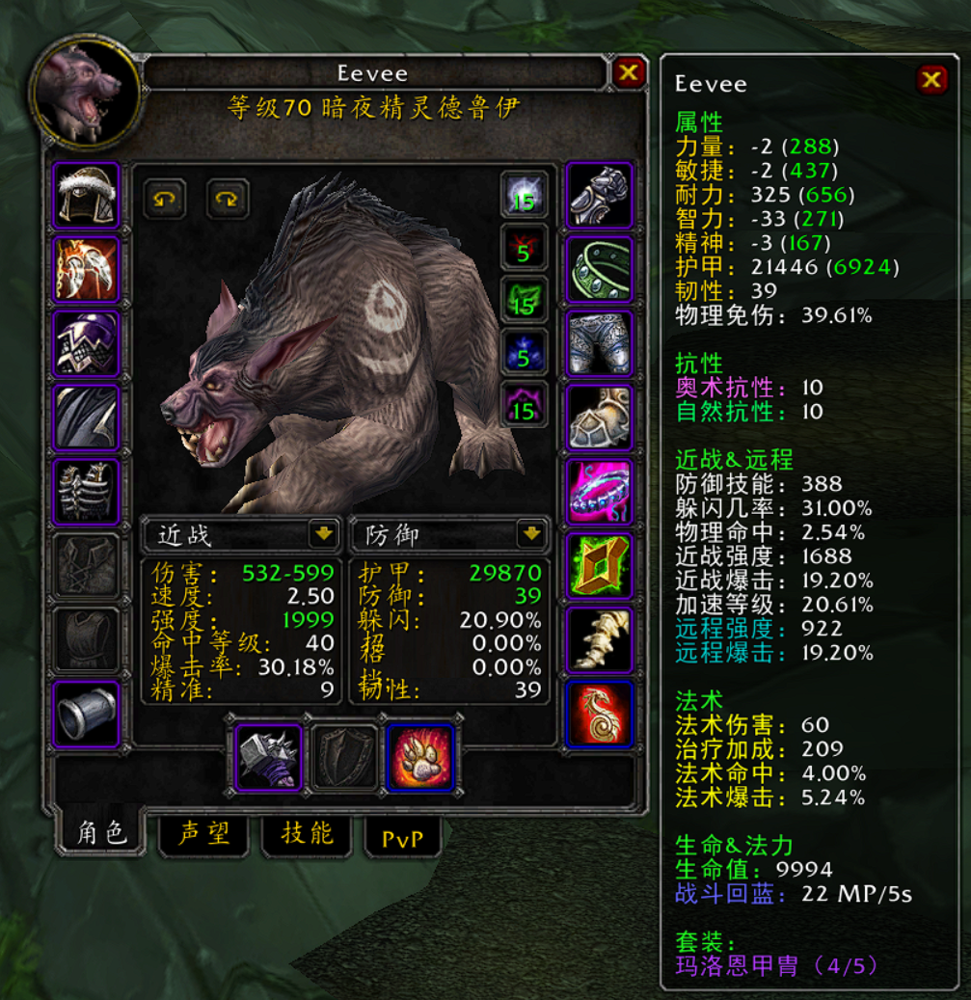
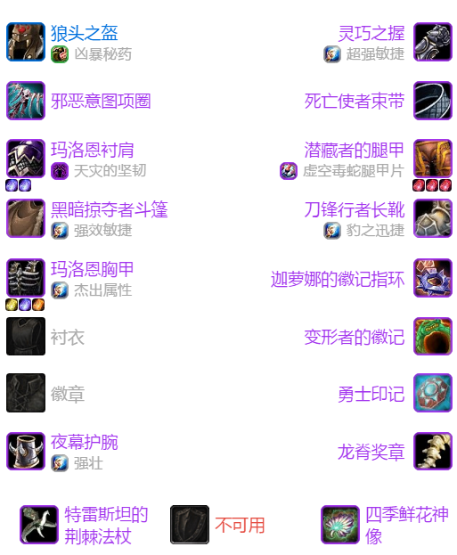
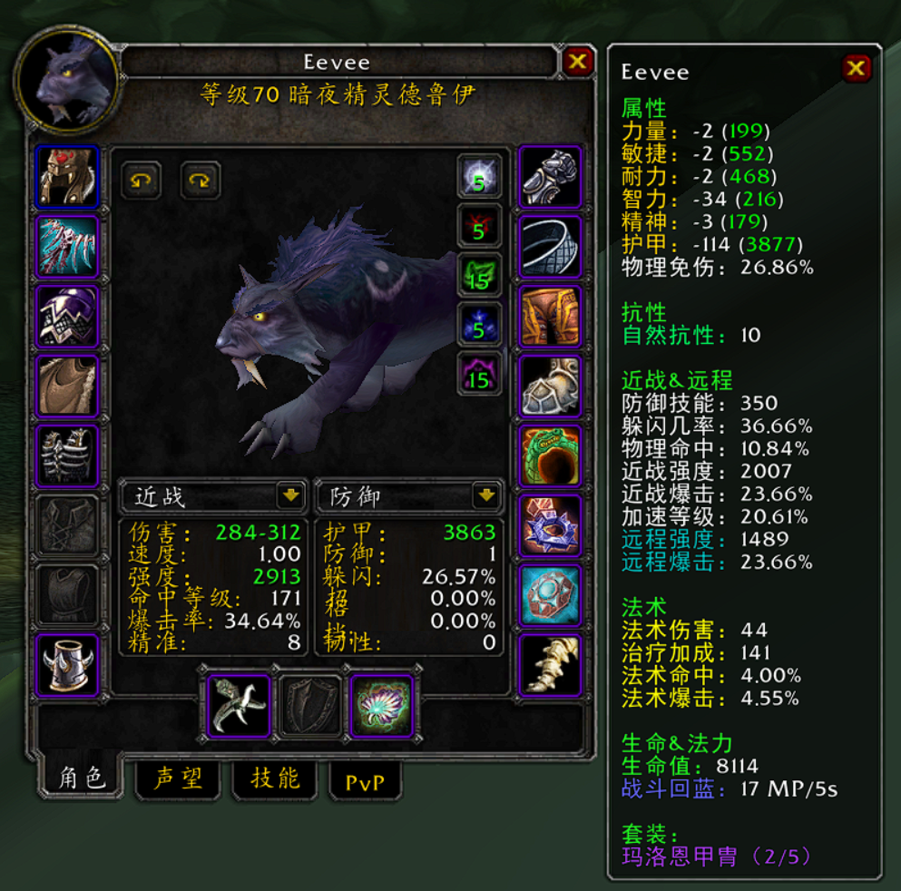

P1野德装备路线
1. 熊德 - 开荒
| 部位 | 装备 | 来源 | 备注 |
|---|---|---|---|
| 护腕 | 其拉死刑护腕 | 60 | 没必要换影月三宝 |
| 手套 | 隐秘神殿手套 | 60 | 差距不大,可以换翠绿 |
| 翠绿手套 | 影月三宝任务 | 最佳 | |
| 腰带 | 厚重其拉腰带 | 60 | 差距不大 |
| 凶兽腰带 | 影月三宝任务 | 最佳 | |
| 索克雷萨的束带 | 虚空风暴任务 | ||
| 衣服 | 厚重裂蹄外套 | 制皮 | 食尸鬼用到换裂蹄 |
| 裤子 | 厚重裂蹄护腿 | 制皮 | 绿龙裤子换纳格兰任务的无尽突袭护腿,后换裂蹄 |
| 鞋子 | 厚重裂蹄长靴 | 制皮 | 暗影烈焰用到换裂蹄 |
| 披风 | 地穴恶魔丝质披风 | 60 | 用到换瑟银 |
| 瑟银纹路披风 | 能源舰B1 | 瑟银纹路好不少,快速入手 | |
| 项链 | 克苏恩的印记 | 60 | 轮替乌鸦 |
| 乌鸦卫士印记 | 奥金顿的兄弟反目任务 | 乌鸦卫士印记撑血量开荒用,备用 | |
| 头 | 吞噬者之帽 | 60 | 过度 |
| 利爪头盔 | 盘牙水库督军的末日任务 | 最佳 | |
| 潜行者的预知头盔 | 影月谷任务 | 最佳 | |
| 肩膀 | 刺杀护肩 | 塞泰克大厅 利爪之王艾吉斯 | 最佳 |
| 匹瑞诺德护肩 | 旧希尔斯布莱德副本时空猎手 | 次选 | |
| 神像 | 蛮兽神像 | 60 | 用到P3 |
| 武器 | 大地守卫者 | 远征军崇拜 | 橙杖用到换大地守卫者,或者先换纳格兰竞技场任务 |
| 戒指1 | 永固精铁指环 | 旧希尔斯布莱德副本B1 | 最好拿2个用到卡拉赞换声望戒指 |
| 戒指2 | 莫克纳萨氏族戒指 | 地狱火城墙箱子 | / |
| 主动饰品 | 精金雕像 | 暗影迷宫 煽动者布莱卡特 | 收一个 |
| 皇家护符 | 地狱火半岛系列任务 阿拉修斯的意图 | 收一个 | |
| 地精火箭发射器 | 工程 | 最佳 | |
| 被动饰品 | 暴君印记 | 60 |
*宝石/附魔 参考下一部分
属性大约 血13700 / 护甲21500 / 防等415 / 躲闪26% / 命中5% / 暴击21%
 
2. 熊德 - 中期
开荒卡拉赞以及英雄本过程中容易获得的一些装备补全,大幅度提升硬减伤
| 部位 | 装备 | 来源 | 附魔 |
|---|---|---|---|
| 护腕 | 森林之心护腕 | 英雄破碎大厅尾王 | 12耐 |
| 手套 | 翠绿手套 | 影月三宝 | 15敏 |
| 腰带 | 愈树者腰带 | 英雄地狱火城墙宝箱 | / |
| 衣服 | 厚重裂蹄外套 | 制皮 | 6属性 |
| 裤子 | 厚重裂蹄护腿 | 制皮 | 40耐,12敏护甲片 |
| 鞋子 | 厚重裂蹄长靴 | 制皮 | 野猪之速 |
| 披风 | 血骑士作战披风 | 25牌子 | / |
| 项链 | 崇神项链 | 25牌子 | / |
| 头 | 眼睛蛇鳞片兜帽 | 制皮 | 随意 |
| 肩膀 | 刺杀护肩 | 塞泰克大厅 利爪之王艾吉斯 | 13躲闪或者10耐 |
| 神像 | 蛮兽神像 | 60 | / |
| 武器 | 大地守卫者 | 远征军崇拜 | 35敏 |
| 戒指1 | 不屈力量之戒 | 25牌子 | / |
| 戒指2 | 紫罗兰徽记 | 卡拉赞声望 | / |
| 饰品1 | 地精火箭发射器 | 工程 | / |
| 饰品2 | 暴君印记 | 60 | / |
珠宝 全紫4敏6耐
属性 血13929 / 护甲22865 / 防等417 / 躲闪33.66% 命中1.14% / 暴击26.04% / 1619攻强 / 完全免爆 / 0韧性
 
3. 熊德 - BIS
核心思想是版本最高精准,兼顾硬减伤和免爆,高仇恨不妥协生存
| 部位 | 装备 | 来源 | 附魔和珠宝 |
|---|---|---|---|
| 护腕 | 统帅的龙皮护腕 | 9435荣誉+20战歌 | 12耐,紫4敏6耐 |
| 手套 | 灵巧之握 | 卡拉赞小怪 | 15敏 |
| 腰带 | 统帅的皮甲腰带 | 14280荣誉+40阿拉希 | / |
| 头 | 玛洛恩鹿盔 | 卡拉赞王子 | 16命中,34攻强,多彩18耐5抗晕/黄8命 |
| 肩膀 | 玛洛恩衬肩 | 格鲁尔 | 冰龙附魔,双紫4敏6耐 |
| 衣服 | 玛洛恩胸甲 | 玛瑟里顿 | 6属性,黄8命/紫4敏6耐/橙4命4敏 |
| 裤子 | 玛洛恩腿甲 | 格鲁尔 | 40耐,12敏护甲片 |
| 鞋子 | 泽尔哈特遗失的靴子 | 卡拉赞小怪 | 野猪之速 |
| 披风 | 镀金瑟银披风 | 卡拉赞疾蹄 | 12敏 |
| 项链 | 豹爪护符 | 卡拉赞埃兰之影 | / |
| 神像 | 蛮兽神像 | 60 | / |
| 武器 | 大地守卫者 | 远征军崇拜 | 35敏 |
| 戒指1 | 不屈力量之戒 | 25牌子 | / |
| 戒指2 | 庇护者的紫罗兰徽记 | 卡拉赞声望 | / |
| 饰品1 | 地精火箭发射器 | 工程 | BOSS用 |
| 勇士印记 | 60 | 小怪用 | |
| 龙脊奖章 | 格鲁尔 | 仇恨向毕业 | |
| 嗜血胸针 | 41牌子 | 没有龙脊的替代 | |
| 饰品2 | 龙牙饰品 | 60 | 常驻被动 |
属性: 血13754 / 护甲27337 / 防等388 / 躲闪35.61% / 命中3.8% / 暴击29.1% / 韧性39 / 1909攻强 / 98.5%免爆
 
4. 猫德 - BIS
猫装是熊的仇恨装,因此也要全数买入;其他过度的猫装就无所谓了.命中溢出,因此看看有没有办法替换掉命中溢出的部分.
| 部位 | 装备 | 来源 | 附魔和珠宝 |
|---|---|---|---|
| 护腕 | 夜幕护腕 | 英雄时光1 | 12力量 |
| 手套 | 灵巧之握 | 卡拉赞小怪 | 15敏 |
| 腰带 | 死亡使者束带 | 英雄时光2 | / |
| 头 | 狼头之盔 | 60 | 16命中,34攻强 |
| 肩膀 | 玛洛恩衬肩 | 格鲁尔 | 冰龙附魔,双紫4敏6耐,共享熊装 |
| 衣服 | 玛洛恩胸甲 | 玛瑟里顿 | 6属性,黄8命/紫4敏6耐/橙4命4敏,共享熊装 |
| 裤子 | 潜藏者的腿甲 | 卡拉赞虚空龙 | 12暴击,50攻强护甲片,三红8敏 |
| 鞋子 | 刀锋行者长靴 | 卡拉赞莫罗斯 | 豹之迅捷,双红8敏 |
| 披风 | 黑暗掠夺者斗篷 | 卡拉赞埃兰之影 | 12敏 |
| 项链 | 邪恶意图项圈 | 25牌子 | / |
| 神像 | 四季鲜花神像 | 15牌子 | / |
| 武器 | 特雷斯坦的荆棘法杖 | 卡拉赞邪蹄 | 35敏 |
| 戒指1 | 变形者的徽记 | 贫民窟崇拜 | / |
| 戒指2 | 迦罗娜的徽记指环 | 卡拉赞馆长 | / |
| 饰品1 | 勇士印记 | 60 | 常驻卡拉赞 |
| 饰品2 | 龙脊奖章 | 格鲁尔 | 常驻被动 |
属性: 血8104 / 命中10.84% / 暴击34.66% / 攻强3056 / 精准8.97
 
5. 配装用其他装备
| 部位 | 装备 | 来源 | 备注 |
|---|---|---|---|
| 腰带 | 戈隆缝合束带 | 格鲁尔 | 防御向 |
| 戒指 | 阿达尔的防御徽记 | 玛瑟里顿任务 | 如果P1开的话取代牌子戒指 |